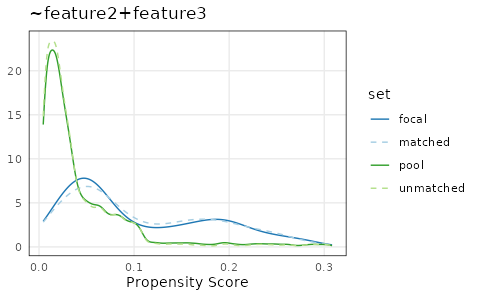
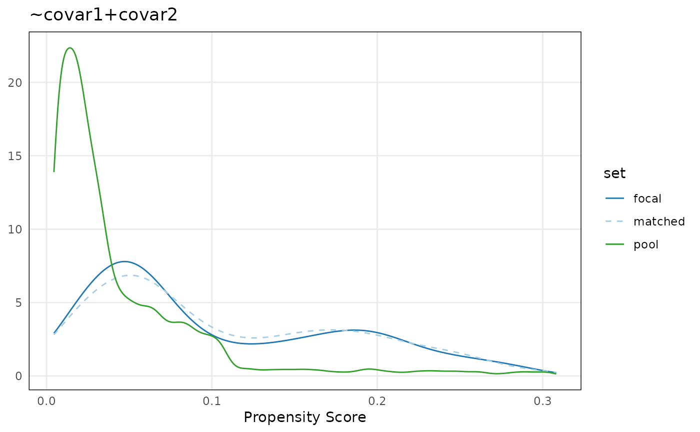
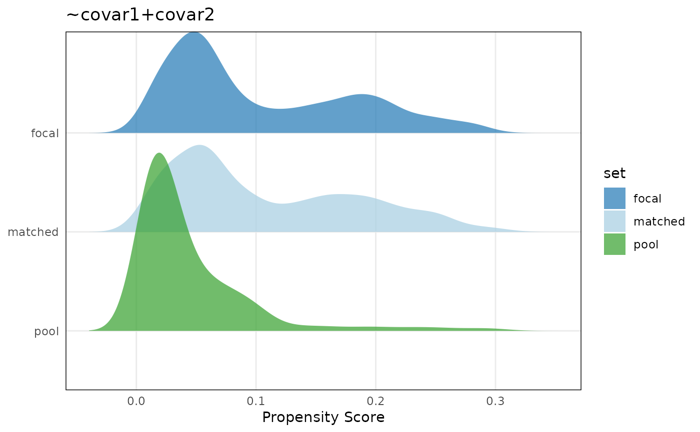
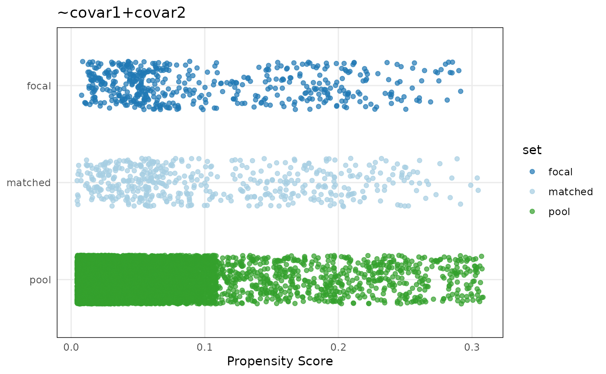

R/AllGenerics.R, R/methods-Matched.R
plotPropensity.RdThis function plots the distribution of propensity scores from each matched set of a Matched object.
plotPropensity(
x,
sets = c("focal", "matched", "pool", "unmatched"),
type = NULL,
log = NULL,
...
)
# S4 method for Matched,character_OR_missing,character_OR_missing,character_OR_missing
plotPropensity(x, sets, type, log, thresh = 12)Matched object
Character vector describing which matched set(s) to include in the plot. Options are 'focal', 'matched', 'pool', or 'unmatched'. Multiple options are accepted.
Character naming the plot type. Available options are one of either 'ridges', 'jitter', 'lines', or 'bars'. Note that for large datasets, use of 'jitter' is discouraged because the large density of points can stall the R-graphics device.
Character vector describing which axis or axes to apply log-transformation. Available options are 'x' and/or 'y'.
Additional arguments.
Integer describing the number of
unique values required to classify a numeric
variable as discrete (and convert it to a factor).
If the number of unique values exceeds thresh
then the variable is considered continuous.
Returns a plot of propensity score distributions among matched sets.
plotPropensity uses the thresh argument
to determine whether to plot propensity scores as
continuous (line plot) or catetgorical (bar plot).
These settings can also be overwritten manually.
plotCovariate() to plot covariate distributions.
## Matched example dataset
set.seed(123)
mdf <- makeExampleMatchedDataSet(matched = TRUE)
## Visualize propensity scores
plotPropensity(mdf)

plotPropensity(mdf,
sets = c('focal', 'matched', 'pool'))

plotPropensity(mdf,
sets = c('focal', 'matched', 'pool'),
type = 'ridges')
#> Picking joint bandwidth of 0.0147

plotPropensity(mdf,
sets = c('focal', 'matched', 'pool'),
type = 'jitter')
